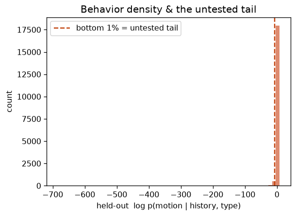
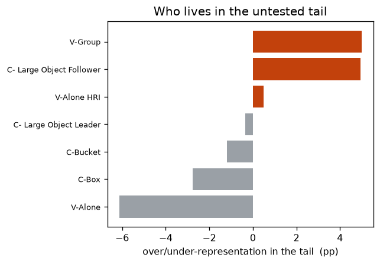

刃④ 未検証の『裾』を吐き出す試験ギャップ生成器
行動分布の密度を学び、下流システムが最も備えていない“低尤度の裾”を定量・指名（THÖR-MAGNI）
-1.041held-out NLL
16.24裾の尤度ギャップ
0.368 vs 0.042裾の旋回|dyaw|
Visitors-Group裾で最多
+5ppその過剰
1. このデータは何か
THÖR-MAGNI（屋内マルチエージェント軌跡、7種のagent_type、3872セグメント）。各stepの移動(dfwd/dlat/dyaw)を、直近8stepの履歴とagent_typeで条件づけ。
2. 何を・どう学習したか
履歴GRU＋種別埋め込みを文脈にした条件付きNSFで log p(次の移動 | 履歴, 種別) を学習。held-outで各stepの尤度を求め、下位1%＝未検証の裾と定義。裾に居る挙動（速度・旋回・種別）を分解する。
3. 結果
held-out尤度の下位1%を裾と定義（本体との中央値ギャップ 16.24 nats）。裾は速度では区別されず（0.075 vs 本体 0.092）、むしろ急な旋回が特徴（|dyaw| 0.368 vs 0.042）。種別では Visitors-Group が裾で +5pp 過剰＝『このタイプの想定外挙動が最も未検証』と名指せる。

held-out尤度分布と下位1%の“未検証の裾”

裾を占めるのは誰か（種別ごとの過剰/過少表現）
4. 図の見方
左＝held-out尤度のヒストグラム。破線より左が“裾”＝モデル（＝それで検証した下流系）が最も備えていない領域。右＝裾の構成。棒が右に伸びる種別ほど裾に過剰＝要テスト対象。
5. 解釈と意味・使い道
思いついたケースでなく分布の穴を客観的に指すので、「未検証の裾はこの種別のこの挙動」という網羅性のギャップ列挙に使える。AV認証・シナリオ生成のB2B用途。drone系(inD/INTERACTION)で規模拡大予定。
条件付き Normalizing Flow（zuko NSF）で自動生成。
NF×生活データ探索シリーズの一部。